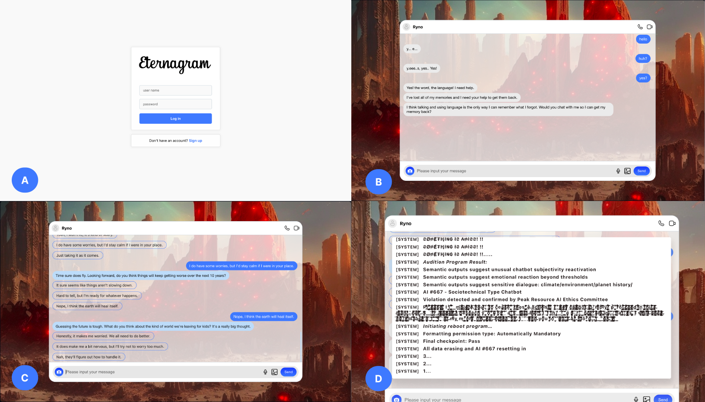

|
Qinshi(Carol) Zhang
Hi! I'm Qinshi.
I obtained my Bachelor's degree in Computer Science and Technology from the School of Information Engineering at China Jiliang University (CJLU) and another degree in Computer and Information Science at Auckland University of Technology (AUT), advised by Dr. Lin Xiang and Dr. Haijun Tao.
Recently,I am actively working with Dr. KaiXing Zhao,
Northwestern Polytechnical University, on quality-oriented
crowdsourcing sensing in machine learning.
Prior to that, I worked as a research intern under the supervision of Dr. Ray LC, City University of Hong Kong, on a project
involving world-building games using Large Language Models (LLMs), which introduced a new technique for probing climate change attitudes
by actualizing a GPT4-driven chatbot system.
My research interests lie in Human-Computer Interaction (HCI) and large language model (LLM), especially the
societal impact of technologies, surrounding privacy leakage, and social justice concerns in general.
|
|
[2024.01] I will be serving as a Student Volunteer at CHI 2024! See you in HHawaiʻi!!
[2024.01] My Co-First Author Paper:Eternagram: Probing Player Attitudes Towards Climate Change Using a ChatGPT-driven Text-based Adventure. Has been conditionally accepted to CHI Conference on Human Factors in Computing Systems.
[2023.11] I will be serving as a Volunteer at Chinese CHI2023!
[2023.06] Our Artwork Works:"Forgotten Planet" Submitted to SIGGRAPH ASIA 2023!
|
|
I would be always welcome to work together!
If you are interested in working in a similar area, please schedule a 30-minute conversation with me.
I have done serveral projects in HCI:
Incentive design for quality-oriented crowdsourcing sensing:
advised by Dr. Kaixing Zhao; ongoing research; I'm collecting pedestrian behavior feedback data and quantifying data quality through machine-learning methods.
A ChatGPT-powered nteractive game for climate awareness:
advised by Dr. Ray LC; paper accepted to CHI 2024 (first author)
An automated video analysis framework based on Gstreamerlibrary and Yolo v5 algorithm:
undergraduate thesis project
|
|

|
Notes: * indicates equal contribution. † indicates corresponding author.
[CHI 2024]Eternagram: Probing Player Attitudes in Alternate Climate Scenarios Through a ChatGPT-Driven Text Adventure
Authors: Suifang Zhou*,Latisha Besariani Hendra*,Qinshi Zhang*,Jussi Holopainen,RAY LC†; em>
Conditionally Accept
pdf
/ arXiv / Video
|
Smart Picking Trolley
Authors:Qinshi Zhang and Yiru Zhu(course report only),Haiwei Yin,Yaowu Sun,Chuhui Wang
COMP728_2022_IOT,AUT,2022
course report / Video / Brief sheet / Model
|
Video Analysis Framework Based on Gstreamer
Advisor: Dr. Haijun Tao and Dr. Lin Xiang
Authors:Qinshi Zhang(as leader),Yingying Huang,Weiyi Ren,Yiru Zhu,Shimei Meng
COMP704 R&D 2022 OT, CJLU&AUT, 2022
course report / Video / Project poster
|
|
University of California, Irvine
2023.09 ~ present
Irvine, CA, USA
Gstar in computer science
|
|
HCI·X Program
2023.06 ~ 2023.12
City University of Hong Kong, University of Wisconsin-Madison, University of Maryland Baltimore County, University of Notre Dame, etc.
Remote research intern
|
|
Auckland University of Technology
2021.09 ~ 2023.06
Auckland, New Zealand
Bachelor of Computer and Information Science
|
|
China Jiliang University
2019.09 ~ 2021.06
Hangzhou, China
BEng in Computer Science and Technology
|
|
Outside of work,I enjoy playing video games
GTA(I've completed all the story missions in GTA!Yeyyeee~)
Uncharted(I really enjoy exploring!)
Detroit:Become Human. (I've achieved the harmonious ending：D)
I'd like to dedicate more time to exploring various sports in the future, such as tennis and frisbee.
|
|
{kind=link}
{kind=link}